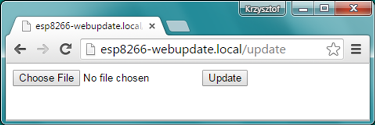

Cập nhật firmware¶
Giới thiệu OTA¶
Cập nhật firmware OTA (Over the Air) là tiến trình tải firmware mới vào ESP module thay vì sử dụng cổng Serial. Tính năng này thực sự rất hữu dụng trong nhiều trường hợp giới hạn về kết nối vật lý đến ESP Module.
OTA có thể thực hiện với:
Sử dụng OTA với tùy chọn dùng Arduino IDE trong quá trình phát triển, thử nghiệm, 2 tùy chọn còn lại phù hợp cho việc triển khai ứng dụng thực tế, cung cấp tính năng cập nhật OTA thông qua web hay sử dụng HTTP Server.
Trong tất cả các trường hợp, thì Firmware hỗ trợ OTA phải được nạp lần đầu tiên qua cổng Serial, nếu mọi thứ hoạt động trơn tru, logic ứng dụng OTA hoạt động đúng thì có thể thực hiện việc cập nhật firmware thông qua OTA.
Sẽ không có đảm bảo an ninh đối với quá trình cập nhật OTA bị hack. Nó phụ thuộc vào nhà phát triển đảm bảo việc cập nhật được phép từ nguồn hợp pháp, đáng tin cậy. Khi cập nhật hoàn tất, ESP8266 sẽ khởi động lại và thực thi code mới. Nhà phát triển phải đảm bảo ứng dụng thực trên module phải được tắt và khởi động lại 1 cách an toàn. Nội dung bên dưới cung cấp bổ sung các thông tin về an ninh, và an toàn cho tiến trình cập nhật OTA.
Bảo mật¶
Khi ESP8266 được phép thực thi OTA, có nghĩa nó được kết nối mạng không dây và có khả năng được cập nhập Sketch mới. Cho nên khả năng ESP8266 bị tấn công sẽ nhiều hơn và bị nạp bởi mã thực thi khác là rất cao. Để giảm khả năng bị tấn công cần xem xét bảo vệ cập nhật của bạn với một mật khẩu, cổng sử dụng cố định khác biệt, v.v…
Kiểm tra những tính năng được cung cấp bởi thư viện ArduinoOTA thường xuyên, có thể được nâng cấp khả năng bảo vệ an toàn:
void setPort(uint16_t port);
void setHostname(const char* hostname);
void setPassword(const char* password);
Một số chức năng bảo vệ đã được xây dựng trong và không yêu cầu bất kỳ
mã hóa nào cho nhà phát triển. ArduinoOTA và espota.py sử dụng
Digest-MD5 để chứng thực việc tải firmware lên. Đơn giản là đảm bảo
tính toàn vẹn của firmware bằng việc tính MD5.
Hãy phân tích rủi ro cho riêng ứng dụng của bạn và tùy thuộc vào ứng dụng mà quyết định những chức năng cũng như thư viện để thực hiện. Nếu cần thiết, có thẻ xem xét việc thực hiện các phương thức bảo vệ khỏi bị hack, ví dụ như cập nhật OTA chỉ cho tải lên chỉ theo lịch trình cụ thể, kích hoạt OTA chỉ được người dùng nhấn nút chuyên dụng “Cập nhật”, v.v…
An toàn¶
Quá trình OTA tiêu tốn nguồn tài nguyên và băng thông của ESP8266 khi tải lên. Sau đó, ESP8266 được khởi động lại và một Sketch mới được thực thi. Cần phân tích và kiểm tra ảnh hưởng của quá trình này tới các chức năng cũ và sketch mới của ESP module.
Nếu ESP được đặt ở xa và điều khiển một vài thiết bị, ta nên chú ý tới hoạt động của thiết bị nếu thiết bị ngừng hoạt động đột xuất do quá trình cập nhật. Do đó, ta cần phải xác định được trạng thái làm việc an toàn của thiết bị trước quá trình cập nhật. Ví dụ, module được dùng để điều khiển hệ thống tưới nước tự động trong vườn. Nếu trong quá trình hoạt động mà hệ thống điều khiển bị tắt đột ngột và các van bị mở, thì cả vườn sẽ bị ngập nước.
Các hàm sau đây được cung cấp bởi thư viện ArduinoOTA và được dùng để xử lý ứng dụng trong quá trình cập nhật OTA hoặc để xử lý khi OTA gặp lỗi:
void onStart(OTA_CALLBACK(fn));
void onEnd(OTA_CALLBACK(fn));
void onProgress(OTA_CALLBACK_PROGRESS(fn));
void onError(OTA_CALLBACK_ERROR (fn));
Yêu cầu căn bản¶
Bộ nhớ Flash phải có đủ dung lượng để lưu cả sketch cũ (đang vận hành trên hệ thống) và sketch mới (cập nhật OTA).
Hệ thống File và EEPROM cũng cần dung lượng để lưu trữ. Xem `flash layout`_ .
Hàm
ESP.getFreeSketchSpace();
được dùng để kiểm tra dung lượng trống cho sketch mới.
Để tìm hiểu tống quát về memory layout, nơi mà new sketch được lưu và quá trình copy nó trong quá trình cập nhật OTA,xem Update process - memory view.
Các phần sau trình bày chi tiết và các phương pháp cụ thể để thưc hiện OTA.
Arduino IDE¶
Thưc hiện OTA với module Arduino IDE chỉ được thưc hiện trong các trường hợp điển hình sau: -trong lúc firmware đang hoạt động để thay thế việc sử dụng cổng nối tiếp, - khi cập nhật ít cho modules, -chỉ khi module Arduino IDE và máy tính đang ờ trong cùng một mạng.
Yêu cầu¶
ESP và máy tính phải được kết nối cùng một mạng.
Ví dụ ứng dụng¶
Các hướng dẫn sau trình bày cách cấu hình OTA trên board NodeMCU 1.0 (ESP-12E Module). Ta có thể dùng các board khác nếu chúng thỏa các yêu cầu trình bảy ở trên. Hướng dẫn này thích hợp với các hệ điều hành hỗ trợ Arduino IDE. Các hình ảnh hướng dẫn thực hiện trên Win7 và bạn có thể gặp một số khác biệt nhỏ (như tên của các cổng nối tiếp), nếu dùng Linux hoặc MacOS if you are using Linux and MacOS.
Trước khi bắt đầu, ta phải cài đặt đầy đủ các phần mềm sau:
Arduino IDE 1.6.7 hoặc bản mới nhất - Latest version
esp8266/Arduino platform package 2.0.0 hoặc bản mới nhất - và làm theo hướng dẫn: See link
Python 2.7 - Download Python
Chú ý: Người dùng Windows nên chọn “Add python.exe to Path” (xem hình bên dưới – lựa chọn này không phải là lựa chọn mặc định)
Bây giờ, ta chuẩn bị sketch và cấu hình cho việc upload qua cổng nối tiếp:
Mở Arduino IDE và load sketch BasicOTA.ino. Vào File > Examples > ArduinoOTA.
Cập nhật SSID và password trong sketch để module có thể truy cập WIFI.
Cấu hình thông số upload như bên dưới (bạn cần điều chỉnh cấu hình cho phù hơp nếu dùng module khác):
Chú ý: Tùy vào phiên bản và board ESP bạn sử dụng, bạn có thể thấy
Upload Using:trong menu. Lựa chọn này sẽ không hoạt động và không ảnh hưởng tới lựa chọn của bạn. Chức năng này tương thích với các phiên bản OTA cũ và bỉ gỡ bỏ ở platform package version 2.2.0.Upload sketch (Ctrl+U). Khi hoàn thành, mở Serial Monitor (Ctrl+Shift+M) và kiểm tra module đã trup cập được WIFI chưa:
Chú ý: ESP module nên được reset sau khi upload xong after. Nếu không thì các bước tiếp theo sẽ không thưc hiện được. Reset có thể được tự động thưc hiện sau khi ta mở màn hình nối tiếp như ở hình trên. Nó phụ thuộc vào cách ta kết nối DTR và RTS từ USB-Serial tới ESP. Nếu phần mềm không reset tự động, thì ta phải ấn nút rest trên board. Để hiểu rõ hơn, cần tìm hiểu hàm ESP.restart().
Khi module được kết nối tới mạng, sau vài giây, cổng esp8266-ota sẽ mở trên Arduino IDE. Chọn port với địa chỉ IP hiện trên cửa sổ Serial Monitor ở bước trước.
Chú ý: Nếu cổng OTA không hiện lên, thoát Arduino IDE, và mở lại. Kiểm tra lại port OTA. Nếu vẫn tiếp tục không hiển thị cổng OTA, kiểm tra tưòng lửa của máy và các cài đặt trên router.5.Chọn cổng OTA:
Chú ý: Mục
Upload Speedở hình trên: Gĩư gía trị này không đổi do nó liên quan tới cổng nối tiếp.
- Nếu bạn đã thực hiện các bước trên thành công, bạn có thể upload (Ctrl+U) sketch qua OTA.
Chú ý: Để có thể upload sketch nhiều lần qua OTA, bạn cần nhúng (embed) lịch OTA vào phầm mềm. Dùng BasicOTA.ino để làm ví dụ.
Bảo mật Password¶
Bảo vệ quá trình upload OTA với password là một quá trình khá đơn gỉản. Những việc bạn cần làm là dán đoạn code sau vào đoạn code của bạn:
ArduinoOTA.setPassword((const char *)"123");
Trong đó "123" làn một password ví dụ. Thay "123" bằng password của bạn.
Trước khi thực hiện việc này, ta cùng tìm hiểu cách sử dụng sketch BasicOTA.ino. BasicOTA.ino có thể truy xuất bằng đường dẫn: File > Examples > ArduinoOTA. Mở BasicOTA.ino, bỏ các comment có sẵn trong file và upload sketch. Để việc troubleshooting dễ hơn, không sửa đổi sketch ví dụ, gồm cả sketch OTA password (như với password 123 lúc nãy). Sau đó upload lại sketch một lần nữa (dùng OTA). Sau khi biên dịch và upload xong, cửa sổ sẽ hiện lên yêu cầu nhập password như hình:
Nhập password và upload như bình thường. Nếu nhập đúng, và chạy thành công,kết quả là thông báo``Authenticating...OK`` trên màn hình
Lần này bạn sẽ không được nhắc yêu cầu phải nhập lại password cho lần sau. Arduino IDE sẽ nhớ password cho bạn. Bạn sẽ nhận được thông báo nhắc nhập lại password khi bạn mở lại IDE hoặc nếu bạn thay đổi password trong sketch và upload sketch và sau đó upload lại một lần nữa.
Cần lưu ý là password cũ có thể bị lộ, nếu IDE không được đóng sau lần upload cuối cùng. Việc này có thể được thực hiện bằng cách cho phép Show verbose ouput during: upload trong File -> Preferences và upload lên module.
Từ hình trên ta có thể thấy password trên log, do nó được đưa tới espota.py upload script
Password cũng có thể bị thay đổi trong khi đang upload như ở hình dưới dây:
Ơ hình trên ta thấy, trong khi upload, Arduino IDE dùng password cũ, do đó việc upload bị thất bại (upload failed) và bị report bởi IDE. Chỉ khi IDE yêu cầu bạn nhập password mới và khi nhập đúng thì việc upload mới thành công.
Troubleshooting¶
Nếu việc cập nhật OTA thất bại, bước đầu tiên bạn cần làm là kiểm tra tin nhắn báo lỗi (error message) hiện trên cửa sổ upload của Arduino IDE. Nếu việc này không gíup được bạn, hãy upload lại khi kiểm tra các thông tin của ESP hiện trên serial port, Serial Monitor từ IDE sẽ không hữu ích trong trường hợp này. Khi cố sử dụng nó, màn hình sau sẽ hiển thị:
Đây là cửa sổ cho Arduino Ýun và không được thực hiện trên ESP8266. Cửa sổ xưất hiện do IDE cố mở Serial Monitor dùng cổng mạng mà bạn đã chọn cho OTA upload.
Thay vào đó, bạn cần một Serial monitor ngoài. Nếu bạn đang sử dụng Windows, hãy sử dụng Terminal . Đây là một cổng RS232 đơn gỉan mà không đòi hỏi điều khiển dòng RTS và DTR. Hai dạng điều khiển dòng này có thể gây ra vấn đề nếu ta đang sử dụng các đường dây cắm theo thứ tự để thay đổi GPIO và chân RESET trên ESP để upload.
Chọn cổng COM và baud rate trên cổng ngoài nếu bạn dùng Arduino Serial Monitor. Chọn cài đặt chuẩn cho Termite như hình sau:
Sau đó chạy OTA từ IDE và theo dõi kết quả hiển thị trên cổng. Quá trình ArduinoOTA thành công dùng BasicOTA.ino sketch như hình dưới (Địa chỉ IP tùy thuộc vào cấu hình mạng của máy bạn)
Nếu upload thất bại, bạn sẽ thấy các lỗi báo về từ IDE, từ các lỗi ngoại lệ (exception) và stack trace (như thiếu cấu trúc try ... catch hoặc throws trong lập trình Java/Android)
Nhưng khác với ở các trường hợp trên khi lỗi được hiển thị trên màn hình compile của IDE, lỗi lần này được hiển thị như hình sau:
Trong trường hợp này, phần lớn các module ESP đều không được reset sau lần upload đầu dùng serial port (như các thao tác đã trình bày ở phần Arduino IDE ở trên)
Các nguyên nhân phổ biến gây lỗi OTA như sau:
- Không đủ dung lượng bộ nhớ trên chip (ví dụ như ESP01 với 512KB bộ nhớ flash không đủ cho OTA).
- Quá nhiều khai báo bộ nhớ cho SPIFFS nên sketch mới sẽ không phù hợp gĩư sketch và SPIFFS (xem lại Giới thiệu về OTA, quá trình update).
- Quá ít khai báo bộ nhớ trong Arduino IDE để3 bạn lựa chọn (tức là ít hơn kích thước vật lý).
- Không reset module ESP sau lần upload đầu dùng serial port.
Web Browser¶
Việc cập nhật được mô tả trong phần này được thực hiện với một web browser. Việc này có thể hữu ích trong các trường hợp sau: * Sau khi cài đặt ứng dụng nếu tải trực tiếp từ Arduino IDE không thuận tuận hoặc không thể tải được do sự cố nào đó * Sau khi cài đặt ứng dụng nếu người dùng không thể update OTA bằng các server update ngoài. * Để update một phần nhỏ lên thiết bị sau khi cài đặt khi cài đặt update server không thực tế.
Yêu cầu¶
Module ESP và máy tính phải được kết nối cùng một mạng.
Tổng quan¶
Cập nhật với web browser được thực hiện bằng lớp ESP8266HTTPUpdateServer cùng với 2 lớp: ESP8266WebServer và ESP8266mDNS
Code:
setup()
MDNS.begin(host);
httpUpdater.setup(&httpServer);
httpServer.begin();
MDNS.addService("http", "tcp", 80);
loop()
httpServer.handleClient();
Ưng dụng ví dụ:¶
Để thực hiện ví dụ, bạn cần:
- Sketch ví dụ WebUpdater.ino trong thư viện ESP8266HTTPUpdateServer.
- NodeMCU 1.0 (ESP-12E Module).
Bạn cũng có thể dùng module khác nếu nó thõa yêu cầu trên
Để bắt đầu, bạn cần phải có đủ các phần mềm sau đây:
Arduino IDE và phiên bản 2.0.0-rc1 (of Nov 17, 2015): Download
- Host software tùy thuộc vào hệ điều hành bạn sử dụng:
Avahi với Linux: Download Avahi Bonjour với Windows Download Bonjour Mac OSX và iOS: đã có hỗ trợ sẵn trên Hệ điều hành
Chuẩn bị sketch và cấu hình cho lần upload đầu với cổng nối tiếp.
Mở Arduino IDE và load sketch WebUpdater.ino (nàm ở File > Examples > ESP8266HTTPUpdateServer).
Update SSID and password vào sketch để cho module có thể truy cập WIFI.
Mở File > Preferences, tìm “Show verbose output during:” và ấn chọn “compilation”.
Chú ý: Việc chọn cài đặt compilation này cũng được yêu cầu tương tự ở 5 bước sau. Bạn có thể không chọn "compilation" ở các bước sau.
Upload sketch (Ctrl+U). Khi thực hiện xong, mở Serial Monitor (Ctrl+Shift+M) và kiểm tra nếu bạn thấy các tin nhắn như hình sau, bao gồm cả URL cho cập nhật OTA

Chú ý: Những tin nhắn này chỉ hiển thị khi module đã truy cập được WIFI và sẵn sàng upload OTA. Cũng giống như với module Arduino IDE, sau khi upload xong thì ta phải reset lại module.
Sau đó mở web browser lên và paste URL ở trên (i.e. http://esp8266-webupdate.local/update). Sau khi thưc hiện xong, browser sẽ có dạng như hình dưới. Bạn có thể chọn file để update.

Chú ý: Khi đã nhập http://esp8266-webupdate.local/update mà không thưc hiện được, hãy thay esp8266-webupdate với module địa chỉ IP. Ví dụ, nếu IP của module là 192.168.1.100 thì URL phải là http://192.168.1.100/update. Phương pháp này hữu hiệu trong trường hợp host software cài đặt ở bước 1 không hoạt động. Nếu vẫn không thưc hiện được nữa và Serial Monitor cũng không có tin nhắn cảnh báo nào thì bạn có thể tự tìm lỗi bằng cách mở URL được cung cấp trên Google Chrome, ấn F12 và kiểm tra nội dụng trong tab "Console" và "Network". Google sẽ cung cấp nhiều tính năng hỗ trợ ở các tab này.
Để có được file, ta chuyển folder làm việc tới folder của Arduino IDE để lưu kết quả biên dịch. Ta có thể kiểm tra đường dẫn tới file sau khi xem kết quả biên dịch như ở hình dưới.
Bây giờ chọn "Choose File" trong web browser, đến nơi lưu file làm việc như đã trình bày ở bước 5, tìm file "WebUpdater.cpp.bin" và upload lên. Nếu upload thành công, ta sẽ có kết quả như hình dưới.
Kết quả reboot có thể thấy trên cửa sổ Serial Monitor như hình dưới:
Sau khi reboot, ta sẽ nhận được tin nhắn HTTPUpdateServer ready! Open http:// esp8266-webupdate.local /update in your browser như ở bước 3, bởi vì module được load lại bằng code cũ (dùng serial port), sau đó dùng OTA.
Sau khi bạn đã quen với các bước thưc hiện này, ta có thể điều chỉnh WebUpdater.ino sketch và xuất ra các tin nhắn theo ý muốn, sau đó biên dịch chương trình, sau đó upload file biên dịch dùng Web browser. Kết quả sẽ hiển thị trên Serial Monitor.
Ta cũng có thể lên kế hoạch update OTA trong sketch, như hướng dẫn Tổng quan ở trên. Nếu thưc hiện đúng, ta có thể dùng web browser upload sketch mới như là bản cập nhật mới, bên cạnh sketch cũ đã update.
Trong trường hợp update OTA thất bại sau khi đã sửa đổi sketch, ta có thể khôi phục lại module bằng cách load lại sketch cũ đã upload. Sau đó debug lỗi sketch dùng Serial Monitor. Sau khi sửa lỗi xong thì update OTA lại,
HTTP Server¶
Lớp''ESPhttpUpdate'' có thể dùng để kiểm tra các update và download một file dạng nhị phân từ HTTP web server. Ta có thể download các update từ mọi địa chỉ IP hoặc tên miền trên Internet.
Yêu cầu¶
- web server
Arduino code¶
Simple updater¶
Simple updater sẽ download file mỗi khi hàm được gọi.
ESPhttpUpdate.update("192.168.0.2", 80, "/arduino.bin");
Advanced updater¶
Ta cũng có thể gọi hàm update bằng một đoạn script trên server. Nếu ta có đối số của version, nó sẽ được gởi lên server. Phía server sẽ dùng nó để kiểm tra xem đã đủ điều kiện thực hiện update được chưa.
Script trên server có các kết quả trả về như:
- (Mã) 200: Yêu cầu gởi hình ảnh firmware.
- (Mã) 304: Thông báo là không có bản update mới.
t_httpUpdate_return ret = ESPhttpUpdate.update("192.168.0.2", 80, "/esp/update/arduino.php", "optional current version string here");
switch(ret) {
case HTTP_UPDATE_FAILED:
Serial.println("[update] Update failed.");
break;
case HTTP_UPDATE_NO_UPDATES:
Serial.println("[update] Update no Update.");
break;
case HTTP_UPDATE_OK:
Serial.println("[update] Update ok."); // may not called we reboot the ESP
break;
}
Server request handling¶
Simple updater¶
Với simple updater, server chỉ cần file nhị phân để update.
Advanced updater¶
Với advanced update thì script phải chạy trên server, ví dụ như một PHP script. Mỗi lần yêu cầu update, ESP sẽ gởi thông tin lên qua giao thức HTTP bằng các HTTP header tới server.
Ví dụ về header data:
[HTTP_USER_AGENT] => ESP8266-http-Update
[HTTP_X_ESP8266_STA_MAC] => 18:FE:AA:AA:AA:AA
[HTTP_X_ESP8266_AP_MAC] => 1A:FE:AA:AA:AA:AA
[HTTP_X_ESP8266_FREE_SPACE] => 671744
[HTTP_X_ESP8266_SKETCH_SIZE] => 373940
[HTTP_X_ESP8266_SKETCH_MD5] => a56f8ef78a0bebd812f62067daf1408a
[HTTP_X_ESP8266_CHIP_SIZE] => 4194304
[HTTP_X_ESP8266_SDK_VERSION] => 1.3.0
[HTTP_X_ESP8266_VERSION] => DOOR-7-g14f53a19
Với các thông tin cung cấp thì script có thể kiểm tra nếu có thể update được. Ta cũng có thể làm tương tự với địa chỉ MAC khi yêu cầu update:
Script ví dụ (Với địa chỉ MAC):
<?PHP
header('Content-type: text/plain; charset=utf8', true);
function check_header($name, $value = false) {
if(!isset($_SERVER[$name])) {
return false;
}
if($value && $_SERVER[$name] != $value) {
return false;
}
return true;
}
function sendFile($path) {
header($_SERVER["SERVER_PROTOCOL"].' 200 OK', true, 200);
header('Content-Type: application/octet-stream', true);
header('Content-Disposition: attachment; filename='.basename($path));
header('Content-Length: '.filesize($path), true);
header('x-MD5: '.md5_file($path), true);
readfile($path);
}
if(!check_header('HTTP_USER_AGENT', 'ESP8266-http-Update')) {
header($_SERVER["SERVER_PROTOCOL"].' 403 Forbidden', true, 403);
echo "only for ESP8266 updater!\n";
exit();
}
if(
!check_header('HTTP_X_ESP8266_STA_MAC') ||
!check_header('HTTP_X_ESP8266_AP_MAC') ||
!check_header('HTTP_X_ESP8266_FREE_SPACE') ||
!check_header('HTTP_X_ESP8266_SKETCH_SIZE') ||
!check_header('HTTP_X_ESP8266_SKETCH_MD5') ||
!check_header('HTTP_X_ESP8266_CHIP_SIZE') ||
!check_header('HTTP_X_ESP8266_SDK_VERSION')
) {
header($_SERVER["SERVER_PROTOCOL"].' 403 Forbidden', true, 403);
echo "only for ESP8266 updater! (header)\n";
exit();
}
$db = array(
"18:FE:AA:AA:AA:AA" => "DOOR-7-g14f53a19",
"18:FE:AA:AA:AA:BB" => "TEMP-1.0.0"
);
if(!isset($db[$_SERVER['HTTP_X_ESP8266_STA_MAC']])) {
header($_SERVER["SERVER_PROTOCOL"].' 500 ESP MAC not configured for updates', true, 500);
}
$localBinary = "./bin/".$db[$_SERVER['HTTP_X_ESP8266_STA_MAC']].".bin";
// Check if version has been set and does not match, if not, check if
// MD5 hash between local binary and ESP8266 binary do not match if not.
// then no update has been found.
if((!check_header('HTTP_X_ESP8266_SDK_VERSION') && $db[$_SERVER['HTTP_X_ESP8266_STA_MAC']] != $_SERVER['HTTP_X_ESP8266_VERSION'])
|| $_SERVER["HTTP_X_ESP8266_SKETCH_MD5"] != md5_file($localBinary)) {
sendFile($localBinary);
} else {
header($_SERVER["SERVER_PROTOCOL"].' 304 Not Modified', true, 304);
}
header($_SERVER["SERVER_PROTOCOL"].' 500 no version for ESP MAC', true, 500);
Stream Interface¶
The Stream Interface dựa trên các mode update khác đã trình bày ở trên như OTA, HTTP server/client.
Updater class¶
Updater nằm trong Core và dùng để xử lí việc viết firmware lên flash, kiểm tra tính thống nhất của nó và thông báo bootloader để load firmware trên boot kế tiếp.
Update process - memory view¶
Sketch mới sẽ được chứa trong dung lượng trống gĩưa sketch cũ và spiff will be stored in the space between the old sketch and the spiff.
Trong lần reboot tiếp theo thì “eboot” bootloader kiểm tra các câu lệnh.
Sketch mới sẽ được copy.
Sketch mới khởi động.